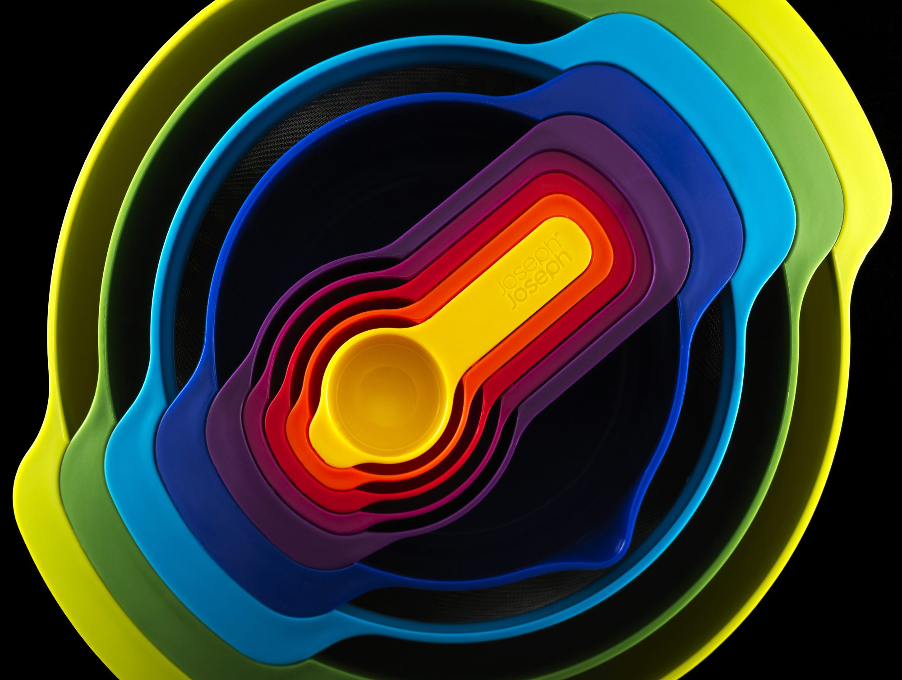

Commercial photographer & filmmaker · St Albans
MarkSims
Photography & Video
St Albans
Architecture, interiors, people and products, photographed and filmed with care: on the ground and from the air.
Since 2003 I have photographed buildings, interiors, people and products for design agencies, developers and brands across London, Hertfordshire and the South East, and further afield when the work takes me there.
 Architecture & Interiors
Architecture, luxury interiors, construction and property, across London, Hertfordshire and the South East.
View the gallery
Architecture & Interiors
Architecture, luxury interiors, construction and property, across London, Hertfordshire and the South East.
View the gallery
 Superyachts
Superyachts and their interiors, photographed in the UK and around the world.
View the gallery
Superyachts
Superyachts and their interiors, photographed in the UK and around the world.
View the gallery
 Portrait & Lifestyle
Corporate portraits, business and lifestyle photography, from St Albans to London and the South East.
View the gallery
Aerial
Drone photography and film from a CAA authorised operator: viewpoints that used to be out of reach.
View the gallery
Portrait & Lifestyle
Corporate portraits, business and lifestyle photography, from St Albans to London and the South East.
View the gallery
Aerial
Drone photography and film from a CAA authorised operator: viewpoints that used to be out of reach.
View the gallery
All photography
The overview


Videography
Moving pictures, too.
Brand films, product explainers, recruitment films and social cuts, filmed on the ground and from the air.
All filmsWhat I do
About me- 01
Photography
Architecture and interiors, portraits and lifestyle, product and still life: on location or in the studio, shot on Hasselblad medium format and professional Nikon systems.
- 02
Videography
Brand films, product explainers, recruitment films and social cuts, from planning the shoot to delivering the edit.
- 03
Drone
Aerial photography and video from a CAA authorised operator flying DJI drones: sites, estates, developments and landscapes.
- 04
Art direction
Shoots planned with you: the idea, the locations, the people and a shot list that fits the brief and the budget.
- 05
Editing
Retouching and colour for stills; edit, grade and sound for film. Delivered ready for print, web and social.
Since 2003
- Member of the Association of Photographers
- CAA authorised drone operator
- Hasselblad medium format & Nikon
- BA (Hons) Photography, Nottingham Trent